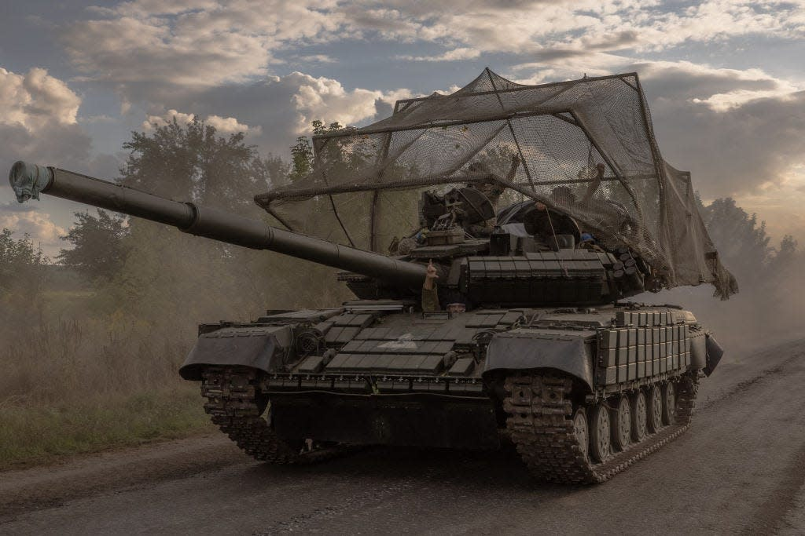

Ukraine is adding more protection to its US-provided Abrams tanks as it tries to fight back against Russia.
These are top tanks, but they came without the top armor upgrades.
The US started sending Abrams tanks to Ukraine in fall 2023, and altogether it has sent 31 of them.
These tanks are considered the best in Ukraine and among the best in the world, but Ukraine didn't receive
the newest version with all the best bells and whistles.
The US, for example, sent the tanks without their most capable armor upgrades. The tanks were older variants,
and also the US, per policy requirements, downgrades export models to protect its sensitive technology.
In a brutal war in which combat vehicles are often the target of artillery and drones, among other threats,
Ukraine's tanks need all the protection they can get, though. So Ukraine is now beefing up the Abrams and other
American vehicles with extra armor to boost survivability.
Nicholas Drummond, a former British Army officer who now works as a land warfare analyst, told Business Insider
"the depleted-uranium armor the Americans use is top secret, and the last thing they want is that falling into
Russian hands." But without top armor, Ukraine needs to come up with its own solutions, he said.
Designing new protection
The tanks that Ukraine received from Western allies, as well as its arsenal of Soviet tanks, have repeatedly
been seen with new types of armor added on, specifically cage armor.
A Ukrainian company has made new protective shields for the Abrams and for Bradley infantry fighting vehicles.
Col. Hamish de Bretton-Gordon, a former commander for the UK's Joint Chemical, Biological, Radiological and
Nuclear forces, described these innovations to BI as "very, very simple, but actually quite effective."

A Ukrainian tank with an added cage near the Russian border in northern Ukraine in August 2024.ROMAN PILIPEY via Getty Images
He described the add-ons as necessary because "the Americans took off some of the secret armor," a change which
makes "them more vulnerable to direct fire."
It's unclear how effective the more advanced armor would be against the mass use of exploding drones,
but the greater protection would still aid Ukraine against the proliferation of different Russian threats
facing armor on the battlefield.
The US' own Abrams tanks have composite armor that includes depleted uranium, an often misunderstood
material that is also used in tank rounds. The details of the armor are kept secret.